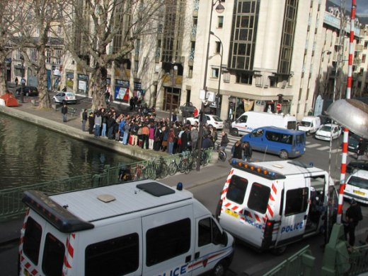
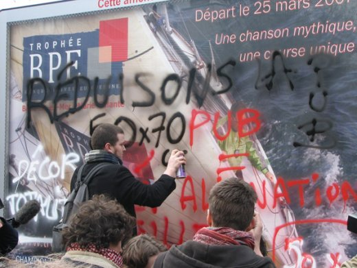

| |
Site dédié à la publication d'informations communiquées par le Collectif des déboulonneurs. En aucun cas ce site n'appelle à des actions illégales. | |
 |
||
|
Accueil du site > Paris > Compte-rendu de la 14ème action du collectif de Paris - février (...)
Rencontres ! Rencontre des éléments perturbateurs sous un ciel de rencontre climatique... Ondées et ensoleillements se mêlent à notre retrouvaille désordonnée et joyeuse du petit groupe de déboulonneuses et déboulonneurs. J’ai l’impression personnelle que nous nous rencontrons moins pour finaliser les derniers préparatifs, se répartir les rôles et se rappeler les consignes (que nous maitrisons...) que pour se mettre du baume au coeur, se mettre dans l’ardeur et la bonne humeur ! Ambiance fébrile malgré tout. Un des CRS que je viens de croiser un peu auparavant m’a confié, après questionnement, qu’ils ne sont pas là pour une manifestation (nous sommes à deux pas de République) mais qu’ils stationnent pour l’instant (sans mission précise). Je suspecte qu’ils fassent partie du comité d’accueil.

Photo Tofz4u Nous rejoignons les personnes venues en soutien au lieu de rendez vous public : angle de la rue d’Alibert et quai de Jemmapes dans le 10e. Nombreux sont ceux qui étaient au concert de soutien des 7 prévenus du collectif de Paris, qui s’est terminé tardivement la veille : nous sommes encore sous cette dynamique... Rencontre des mondes. Nous sommes au coeur du théatre vivant des tentes des SDF (suite à l’action des Enfants de Don Quichotte) qui longent les quais en rang d’oignons à perte de vue. Les tentes sont formatées par le brandon d’une chaîne de magasins dédiés au sport... mais nous convenons qu’il serait stérile et contreproductif de polémiquer là dessus. Le groupe grossit à vue d’oeil, car les retardataires n’arrêtent pas d’arriver... Rencontre des genres... Une des barbouilleuses et un des barbouilleur commencent une petite saynète : humour, improvisation et pédagogie se croisent pour présenter notre action : ils jouent un dialogue ordinaire d’individus qui commentent un fait divers, en l’occurence une action des déboulonneurs... Rencontre de problématiques... Il y a une pression un peu spéciale. D’abord les cars de police sont venus en nombre s’entasser à quelques mètres, et bloquent plus ou moins la circulation. Mais en plus, le contexte de précarité à la fois réel, à la fois mis en scène, outrancier, spectaculaire et hélas potentiellement touristique, cette précarité qui nous entourent ne peut manquer de nous interroger sur la pertinence de mener une action comme la notre, et notamment d’étaler nos revendications en ces lieu et moment. Nous sommes confrontés à de l’urgence, et une problématique criante. Notre combat se mène sur le fond et sur le temps, et notre angle d’attaque, l’affichage publicitaire, et notre revendication du 50cm par 70cm risquent d’apparaître comme bien légers, décalés et hors propos. Je tiens une petite bafouille pour faire ce lien entre la misère et la société d’hyperconsommation, propulsée par la publicité, consumérisme qui s’étale avec insolence et qui se construit sur et grace à des inégalités... Petit rappel (récurrent) que les médias auront toujours difficulté à traiter le fond, les causes et les sujets qui tâchent et fâchent quand leur gagne-pain est la publicité et donc quand l’objectif d’avoir l’audience la plus nombreuse et docile à vendre aux annonceurs... Quelques personnes du public prennent la parole aussi pour parler spécifiquement du problème des sans-logis, et en parvenant à relier çà aux ONG qui font de la publicité mensongère sur affiche. Rencontre entre la non-violence en devenir et la pratique usuelle de la violence... Après un appel assez courroucé de David auprès des forces de l’ordre pour qu’elles se tiennent tranquilles, remettant en avant notre démarche non-violente, afin que celle ci soit bien intégrée aux comportements des policiers à notre égard et que la routine musculaire et demonstrative à laquelle il donne libre cours trop souvent ne s’impose pas aux manifestants comme cela avait été le cas à la 13e action de « Paris »... Pas de problème deux déboulonneuses avaient déjà pris soin en parallèle d’expliquer calmement notre démarche, ce qui avait rassuré les policiers, et permis d’obtenir l’engagement qu’ils n’embarquent que les barbouilleurs avérés et en action. Rencontre du lieu. Déplacement de notre soixantaine de public augmentée de la dizaine de médias rendus visibles par leurs équipements photos et vidéo, jusqu’à la rue de Vellefaux. Retrouvailles encore d’un lieu que nous avons barbouillé à répétition. Panneaux illégaux posés sur une fausse palissade de chantier apposé à un hôpital, panneaux gigantesques qui sautent aux visages des enfants de maternelle et de cours élémentaire à la sortie de leur école. Les barbouillages ont sévi à répétition, donc le lieu nous est particulièrement familié...Le fait qu’un panneau déroulant et rétroéclairé sur pied, obstruant le champ visuel et l’espace piéton du carrefour, ait été « déboulonné » par les afficheurs eux-même, et qu’on en voit encore la cicatrice dans le bitume du trottoir donne encore plus de saveur à l’endroit. Le point sera d’ailleurs abordé parmi les prises de parole. Rencontre des populations. C’est un plaisir de voir la diversité de la composition de la foule : des personnes agées, à la tenue vestimentaire soignée, jusqu’à des jeunes libertaires venus avec le drapeau noir symbolisant l’anarchie politique qu’ils plébiscitent... Certains tractent, discutent... Les piétons s’arrêtent interloqués par la manifestation et l’action : nous nous empressons d’aller les voir pour les rassurer, leur expliquer et tenter de les rallier à notre cause...

Photo Tofz4u L’objet de la rencontre ... En fait, les sept barbouilleurs se sont attaqués aux panneaux aussitôt arrivés sur le lieu. La foule de soutien les entourant et les encourageant. Les messages se sont enchevêtrés promptement : "réduisons la pub", "décor totalitaire", "réveillez vous", "pub = aliénation mentale", "50cm x 70 cm"... Les policiers jouent alors leur rôle de « globules bleus » (comme dirait YG) et arrêtent les barbouilleurs, et les mettent devant le mur pour les fouiller et les contrôler. Le responsable du BIVP (Bureau d’Information de la Voie Publique) préfèrerait ne pas emmener les barbouilleurs au poste, mais malgré sa négociation, ils doit s’éxécuter. Les barbouilleurs, partis sous les vivats, ressortiront deux heures et demi après du commissariat du Xe arrt. Rencontres d’idées... Pendant ce temps, les prises de parole se succèdent. Est lu un texte de Zola où la réclame est en ligne de mire, sous forme de nouvelle. On compare les tout petits panneaux à l’angle de la rue, face aux dispositfs énormes publicitaires pour parler de la différence de traitement (deux poids, deux mesures). On boit du jus de gingembre-citron, on discute, on s’éternise devant ce délit dont nous nous sentons solidaires ! On finira par aller encore se retrouver dans un parc ou un café pour continuer à refaire le monde et fêter cette 14e nouvelle victoire du collectif des déboulonneurs de Paris.... |
|
Site utilisant SPIP - Hébergement Ouvaton
|